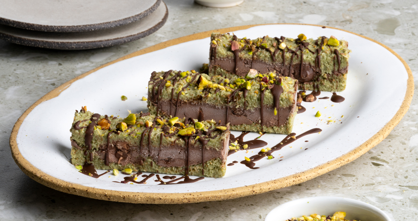

Dubai chocolate ice cream bars
Home

Image by Akis Petretzikis
Description
Whip up the ultimate Dubai chocolate ice cream bars; the summer version of the viral Dubai chocolate! Chilled bars with shredded phyllo, pistachio praline paste, and a rich chocolate ice cream filling!
The following recipe is directly copied from the well-known Greek chef Akis Petretzikis. Check out his personal website for more Greek dishes!
Ingredients (for 12 pieces)
- 150 g shredded phyllo dough
- 40 g butter, + extra for the loaf tin
- 230 gpistachio spread
- 350 g chocolate ice cream
- 30 g chocolate couverture, melted
- 20 g pistachios
Steps
- Finely chop the shredded phyllo with a knife, untangle it well with your hands to spread it out, and set it aside.
- Place a frying pan over medium heat, add the butter, and let it melt.
- Add the shredded phyllo and lower the heat.
- Cook the phyllo for 7-8 minutes, stirring constantly with a wooden spoon until it is nicely golden.
- Remove the pan from the heat and set the shredded phyllo aside to cool for 15 minutes.
- Add the pistachio praline paste, mix them with a spoon, and set aside.
- Remove the ice cream from the freezer and set it aside for 10-15 minutes to slightly soften.
- Butter a 10x30 cm loaf tin, and then line it with parchment paper to cover the bottom and the sides, leaving quite an overhang.
- Add half of the shredded phyllo mixture to the loaf tin and spread it with a spoon.
- Add the ice cream on top and spread it evenly with the spoon.
- Add the rest of the shredded phyllo, spread it evenly, and press it down with the help of the parchment to flatten the surface.
- Put the loaf tin in the freezer for at least 2 hours until the shredded phyllo is firm and set.
- Remove the loaf tin from the freezer and unmold the dessert by flipping it onto a cutting board.
-
Cut the dessert into about 12 bars, drizzle them with the melted chocolate, sprinkle with pistachios, and serve.